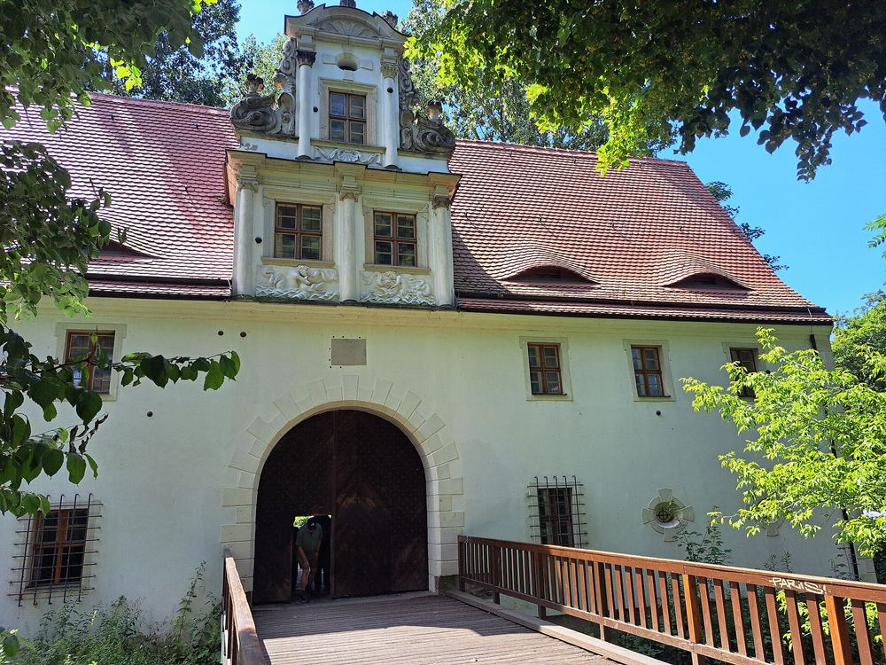
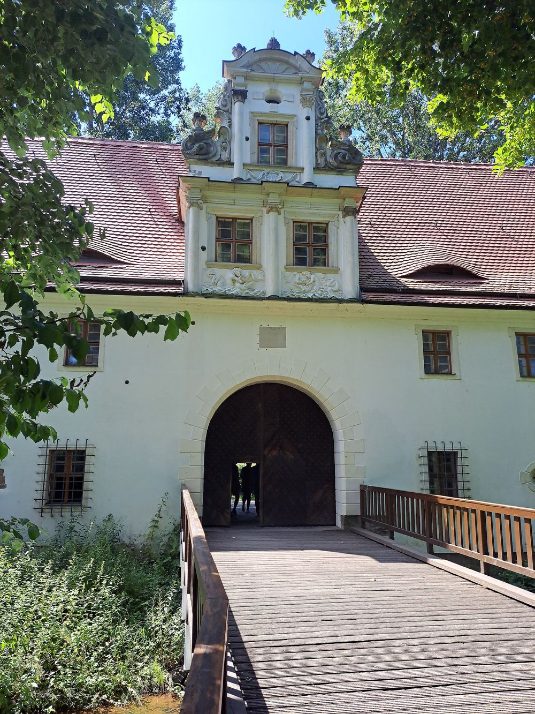
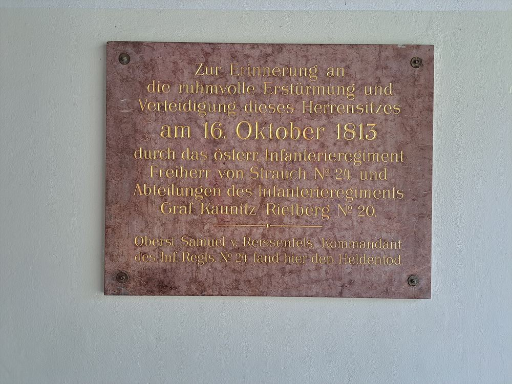
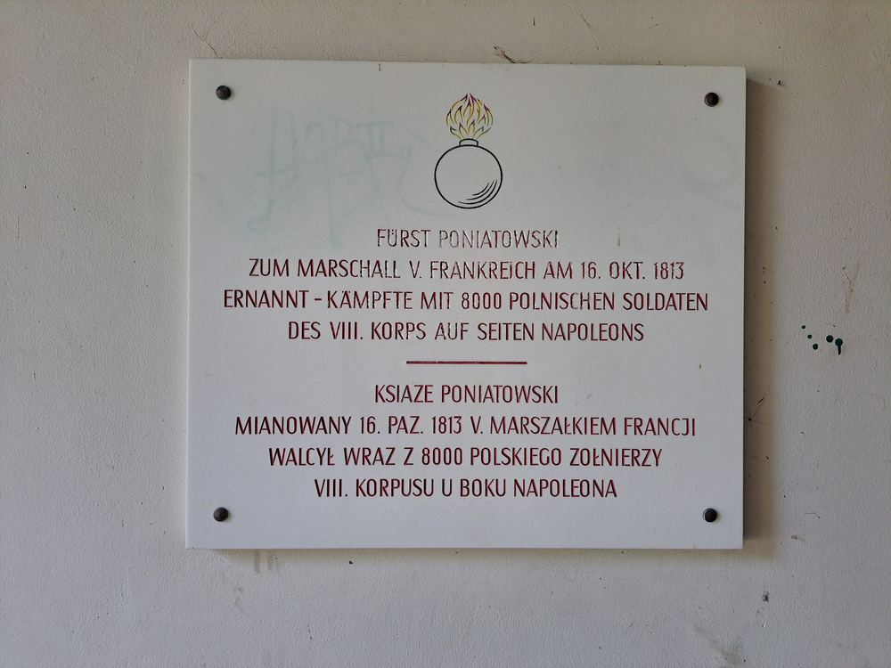
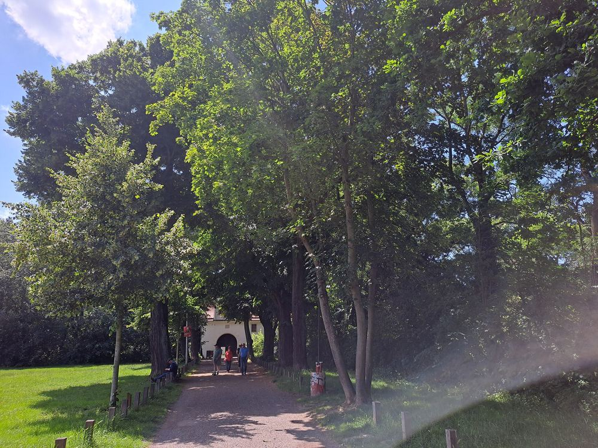

Leipzig · Dölitz Torhaus von 1670 Museum seit 1960
Treten Sie durch das Tor.
Dahinter warten über 100.000 Zinnfiguren auf drei Etagen — und ein Schlachtfeld, auf dem Sie bereits stehen. Am 16. Oktober 1813 war dieser Hof einer der umkämpftesten Orte der Völkerschlacht bei Leipzig.
Geöffnet Mi · Sa · So · feiertags, 10–17 Uhr Einlass bis 16.30 Uhr Eintritt 5 € · ermäßigt 3 € Helenenstraße 24, 04279 Leipzig
Das Haus in Zahlen
Ein Torhaus, das mehr Bewohner hat als mancher Ort.
Zinnfiguren in der Sammlung
Etagen Ausstellung im Barockbau
misst das Großdiorama der Völkerschlacht
erbaut — das älteste Gebäude in Dölitz
Eintritt für Erwachsene, ermäßigt 3 €
Die Dauerausstellung
Geschichte in Miniatur, Vitrine für Vitrine.
Das Zinnfigurenmuseum im Torhaus Dölitz gehört zu den größten Museen seiner Art in Europa. Auf drei Etagen erzählen kunstvoll bemalte Einzelfiguren und ganze Dioramen regionale und Weltgeschichte — vom alten Babylon über Ritter und die türkische Belagerung Wiens 1683 bis ins Rokoko.
Wie eine Zinnfigur entsteht
Ein eigener Raum zeigt den ganzen Weg: Idee, Zeichnung, Gravur, Guss, Bemalung und schließlich der Bau des Dioramas.
Leipzig und Dölitz
Zwei Räume, mit Unterstützung der LEIPZIGSTIFTUNG neu konzipiert, widmen sich der Stadt und dem Dorf, das Goethe als Student gern besuchte.

Das Glanzstück
Das Großdiorama der Völkerschlacht
25 Quadratmeter, viele tausend Figuren, ein einziger Tag. Das Großdiorama der Völkerschlacht
Das größte Diorama des Hauses zählt 12.126 Figuren. Die Zahl ist genau bekannt, weil sie einmal gezählt wurden.
Es zeigt die Kampfhandlungen des 18. Oktober 1813 auf dem südlichen Schlachtfeld der Völkerschlacht bei Leipzig — rund um Dölitz, Probstheida und Holzhausen. Wer davor steht, sieht die Ortschaften, in denen er sich gerade befindet.
Der Schwerpunkt der Dauerausstellung liegt auf der napoleonischen Epoche. Dazu kommen Dioramen zur Antike, zum Mittelalter und zum 18. Jahrhundert, und mehrmals im Jahr wechselnde Sonderausstellungen.
16. Oktober 1813
Der Schauplatz ist das Museum.
Der ehemalige Herrensitz Dölitz war am 16. Oktober 1813 eines der Zentren der Völkerschlacht. Hier geriet der österreichische General von Merveldt in Gefangenschaft — Napoleon schickte ihn mit einem Angebot zur Waffenruhe zu den Verbündeten zurück. 26 Gebäude im Ort wurden zerstört.
Im Torbogen hängen bis heute zwei Gedenktafeln. Sie sind das Erste, was Sie sehen, bevor Sie das Museum betreten.


Jetzt im Haus
Historisches Tabletop
Die Sonderausstellung läuft vom 4. April 2026 bis zum 31. März 2027. Sie ist im regulären Eintritt enthalten.
Die nächsten Termine
- 16. Aug2026 · 15.30 Uhr Kaffeekonzert: Schlager trifft MusicalEinlass 14.30 Uhr
- 29. Aug2026 · 17–23 Uhr Lichterfest im agra-ParkEintrittsfrei; im Museum ermäßigter Eintritt für alle frei
- 24. Okt2026 · ganztägig 213. Jahrestag der VölkerschlachtHistorische Biwaks und Darstellungen, 24. und 25. Oktober
Ihr Besuch
Alles auf einen Blick.
- Geöffnet
- Mittwoch, Samstag, Sonntag und feiertags, 10–17 Uhr Ganzjährig. Letzter Einlass 16.30 Uhr.
- Eintritt
- Erwachsene 5,00 € · ermäßigt 3,00 € · Familienkarte 14,00 € Kinder unter 7 Jahren frei. Im Museum ist nur Barzahlung möglich.
- Führungen
- 35,00 € pauschal, rund 60 Minuten Drei Themen zur Wahl, auch außerhalb der Öffnungszeiten möglich.
- Adresse
- Helenenstraße 24, 04279 Leipzig Straßenbahn 11 bis Leinestraße, etwa 400 m zu Fuß.
- Kontakt
- 0341 3389107
info@torhaus-doelitz.eu

Bitte nicht auf den Rasenflächen links und rechts des Weges parken — das Ordnungsamt ist dort aktiv. Nutzen Sie den öffentlichen Straßenbereich.
Wer das Haus trägt
Ein Verein, kein Konzern.
Das Torhaus wird seit Juli 2014 vom Verband Jahrfeier Völkerschlacht b. Leipzig 1813 e. V. betrieben — gemeinsam mit den Zinnfigurenfreunden Leipzig e. V., gefördert vom Kulturamt der Stadt Leipzig. Ohne diese Zusammenarbeit gäbe es das Museum in dieser Form nicht.